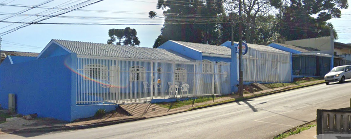
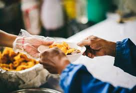
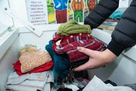
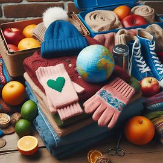

Quem somos:
O projeto “Vidas por Vidas” é uma iniciativa voluntária que busca fornecer apoio essencial para pessoas em situação de rua, especialmente durante os meses mais frios. Nosso objetivo é oferecer refeições nutritivas e agasalhos para aqueles que enfrentam desafios diários nas ruas.
Distribuição de Marmitas:
Voluntários se reúnem em uma cozinha solidária para preparar marmitas frescas e saudáveis.
As marmitas são embaladas com carinho e incluem uma variedade de alimentos, como arroz, feijão, legumes
e proteínas.
A distribuição ocorre em pontos estratégicos da cidade, onde há maior concentração de pessoas em
situação de rua.
Campanha de Agasalhos:
Realizamos campanhas sazonais para arrecadar roupas e agasalhos.
Casacos, cobertores, meias e luvas são distribuídos para ajudar a proteger contra o frio intenso.
Como Apoiar:
Doações: A comunidade pode contribuir doando alimentos não perecíveis, roupas quentes e cobertores.
Voluntariado: Seja um voluntário! Ajude a preparar as marmitas, distribuir agasalhos ou sensibilizar
outras pessoas sobre a causa.
Conscientização: Compartilhe informações sobre o projeto nas redes sociais e incentive a empatia e
solidariedade.